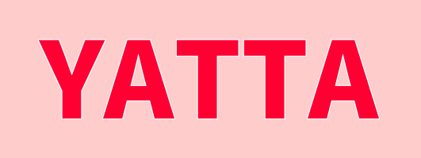

Web開発
HTML/CSS/JavaScriptを中心に学習を行っており、使いやすく見やすいUIを作る力を伸ばしています。
Information Engineering Student
岡山大学で情報工学を学びながら、さまざまなプロジェクトや共同研究に参加しています。 競技プログラミングで鍛えた実装力を、Web開発やセキュリティの学習へ広げています。

学習記録や制作メモを、あとからここに表示します。
Profile
岡山大学工学部の2年生です。大学では情報工学を学んでいます。 DS部というサークルで技術部長をしており、さまざまなプロジェクトや共同研究に参加しています。
Skills
Interest
HTML/CSS/JavaScriptを中心に学習を行っており、使いやすく見やすいUIを作る力を伸ばしています。
安全なシステム設計や脆弱性への理解を深めるため、CTFなどを通して学習を行っています。
AtCoderなどを通して、アルゴリズムと実装速度を継続的に鍛えています。
Achievement
継続的なコンテスト参加を通じて、問題解決力と実装力を磨いています。
学習と挑戦の積み重ねを、成果として形にしています。
History